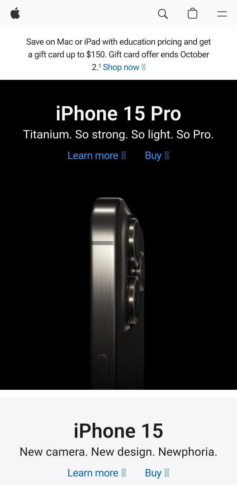

Visual Hierarchy
Apple
Apple's website effectively uses visual hierarchy to guide users' attention. The prominent placement of product images and headlines creates a clear focal point. Important elements such as new product releases and featured content are larger and bolder, while secondary information like links to support and services are smaller. This prioritization helps users quickly identify what's most important and navigate the site efficiently.
White Space and Clean Design
Google's homepage is a prime example of clean design and effective use of white space. The majority of the page is empty except for the Google logo, search bar, and a few buttons. This simplicity not only makes the page aesthetically pleasing but also keeps the focus on the primary action – searching. The generous white space ensures that users aren't overwhelmed with unnecessary information.
Repetition
Amazon
Amazon employs the principle of repetition consistently throughout its website. Product listings have a uniform layout with repetition in terms of the placement of product images, titles, prices, and "Add to Cart" buttons. This repetition creates a sense of consistency and familiarity, making it easier for users to understand and navigate the site. Additionally, Amazon uses consistent navigation menus and headers across its various pages, further reinforcing the principle of repetition for a seamless user experience.